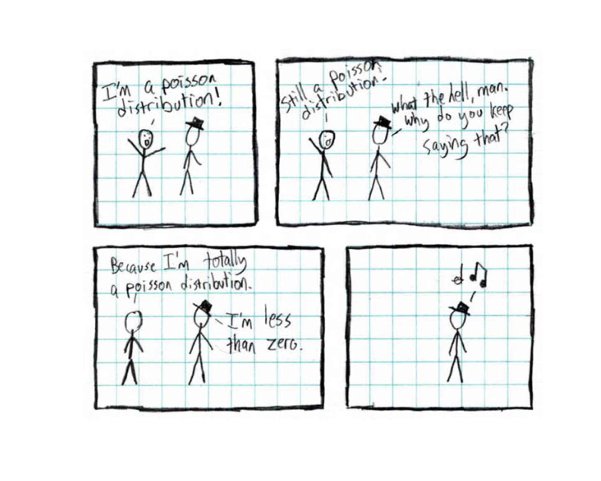
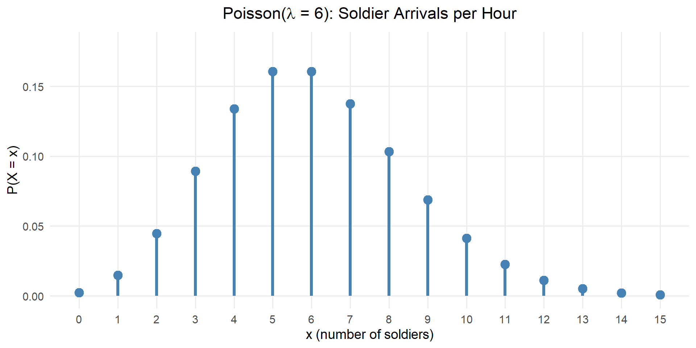
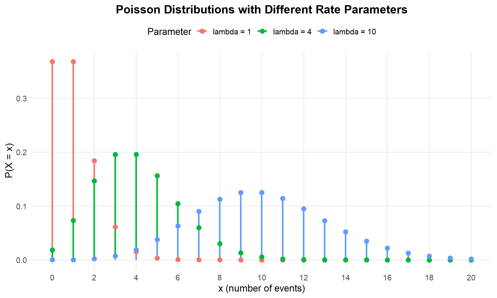
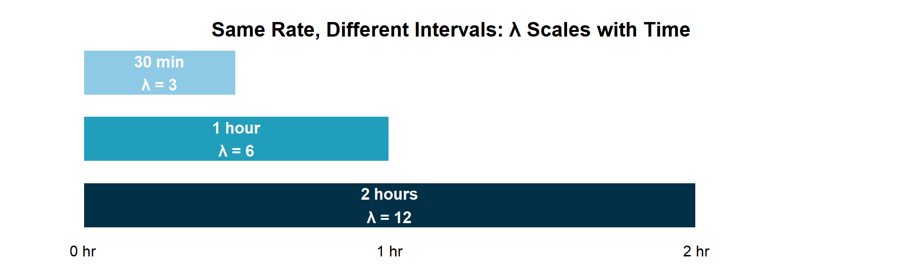

Lesson 11: Poisson Distribution
Explaining the joke (which, as we all know, always makes it funnier): The Poisson distribution is only defined for \(x = 0, 1, 2, \ldots\) — you can’t have a negative number of events. So when the other character claims to be “less than zero,” the Poisson distribution guy vanishes, because the distribution literally doesn’t exist there. By the end of today’s lesson, you’ll get this without my help.

What We Did: Lessons 6, 7, 8, 9 & 10
Quick Review: Probability Basics (Lesson 6)
NoteKey Concepts from Lesson 6
Sample Spaces and Events:
- Sample space \(S\) = set of all possible outcomes
- Event = subset of the sample space
- Operations: Union (\(A \cup B\)), Intersection (\(A \cap B\)), Complement (\(A^c\))
Kolmogorov Axioms:
- \(P(A) \geq 0\)
- \(P(S) = 1\)
- For mutually exclusive events: \(P(A \cup B) = P(A) + P(B)\)
Key Rules:
- Complement Rule: \(P(A^c) = 1 - P(A)\)
- Addition Rule: \(P(A \cup B) = P(A) + P(B) - P(A \cap B)\)
Quick Review: Conditional Probability (Lesson 7)
NoteKey Concepts from Lesson 7
Conditional Probability: \[P(A \mid B) = \frac{P(A \cap B)}{P(B)}\]
Multiplication Rule: \[P(A \cap B) = P(A) \cdot P(B \mid A) = P(B) \cdot P(A \mid B)\]
Law of Total Probability: \[P(A) = P(B) \cdot P(A \mid B) + P(B^c) \cdot P(A \mid B^c)\]
Bayes’ Theorem: \[P(B \mid A) = \frac{P(B) \cdot P(A \mid B)}{P(B) \cdot P(A \mid B) + P(B^c) \cdot P(A \mid B^c)}\]
Quick Review: Counting & Independence (Lesson 8)
NoteKey Concepts from Lesson 8
Multiplication Principle: If an experiment has stages with \(n_1, n_2, \ldots, n_k\) outcomes, the total outcomes are \(n_1 \times n_2 \times \cdots \times n_k\).
Counting Formulas:
| With Replacement | Without Replacement | |
|---|---|---|
| Ordered | \(n^k\) | \(P(n,k) = \frac{n!}{(n-k)!}\) |
| Unordered | \(\binom{n+k-1}{k}\) | \(\binom{n}{k} = \frac{n!}{k!(n-k)!}\) |
Independence:
- \(A\) and \(B\) are independent if \(P(A \cap B) = P(A) \cdot P(B)\)
- Equivalently: \(P(A \mid B) = P(A)\)
- Independent \(\neq\) Mutually Exclusive!
Quick Review: Discrete Random Variables (Lesson 9)
NoteKey Concepts from Lesson 9
Random Variables:
- A random variable \(X\) assigns a numerical value to each outcome in a sample space
- Discrete RVs take finite or countably infinite values
PMF: \(p(x) = P(X = x)\) with \(p(x) \geq 0\) and \(\sum p(x) = 1\)
CDF: \(F(x) = P(X \leq x) = \sum_{y \leq x} p(y)\)
Expected Value: \(E(X) = \sum x \cdot p(x)\)
Variance: \(Var(X) = \sum (x - \mu)^2 \cdot p(x) = E(X^2) - [E(X)]^2\)
Quick Review: Binomial Distribution (Lesson 10)
NoteKey Concepts from Lesson 10
BINS Conditions:
- Binary outcomes (success/failure)
- Independent trials
- Number of trials is fixed (\(n\))
- Same probability (\(p\)) each trial
Key Formulas: If \(X \sim \text{Binomial}(n, p)\):
- PMF: \(P(X = x) = \binom{n}{x} p^x (1-p)^{n-x}\)
- Mean: \(E(X) = np\)
- Variance: \(Var(X) = np(1-p)\)
R Functions: dbinom(x, size, prob) for PMF, pbinom(x, size, prob) for CDF
What We’re Doing: Lesson 11
Objectives
- Model counts and rare events with Poisson distributions
- Calculate Poisson probabilities and parameters
Required Reading
Devore, Section 3.6
Break!
Reese
Cal
Nothing new… so… Army
Army Story
The Takeaway for Today
NoteKey Concepts: Poisson Distribution
When to Use Poisson:
- Counting the number of events in a fixed interval (time, area, volume, etc.)
- Events occur independently and at a constant average rate \(\lambda\)
Key Formulas: If \(X \sim \text{Poisson}(\lambda)\):
- PMF: \(P(X = x) = \frac{e^{-\lambda} \lambda^x}{x!}, \quad x = 0, 1, 2, \ldots\)
- Mean: \(E(X) = \lambda\)
- Variance: \(Var(X) = \lambda\)
- Standard Deviation: \(SD(X) = \sqrt{\lambda}\)
R Functions:
dpois(x, lambda)— PMF: \(P(X = x)\)ppois(x, lambda)— CDF: \(P(X \leq x)\)
Motivation: From Binomial to Poisson
The Limitation of Binomial
The Binomial distribution counts successes in a fixed number of trials. But what about:
- Number of IED incidents along a patrol route per month?
- Number of equipment failures in a motor pool per week?
- Number of calls to a TOC during a 4-hour shift?
- Number of meteorite strikes on a given area per year?
In these cases, we’re counting events in a continuous interval — there’s no fixed number of “trials.”
The Poisson Setting
ImportantWhen to Use the Poisson Distribution
The Poisson distribution models the number of events occurring in a fixed interval when:
- Events occur one at a time (no simultaneous events)
- Events are independent of each other
- Events occur at a constant average rate \(\lambda\) throughout the interval
The parameter \(\lambda\) (lambda) represents the average number of events per interval.

The distribution is named after French mathematician Simeon Denis Poisson, who published it in 1837. He developed it while studying the number of wrongful convictions in court cases — a classic “rare event” problem.
WarningPoisson vs. Binomial
- Binomial: Fixed number of trials \(n\), counting successes
- Poisson: Fixed interval of time/space, counting occurrences
- Key difference: In a Poisson setting, there’s no upper limit on the number of events (theoretically \(X\) can be 0, 1, 2, 3, …)
The Poisson Distribution
The Poisson PMF
ImportantThe Poisson PMF
If \(X \sim \text{Poisson}(\lambda)\), then the probability of exactly \(x\) events is:
\[P(X = x) = \frac{e^{-\lambda} \lambda^x}{x!}, \quad x = 0, 1, 2, \ldots\]
where:
- \(\lambda\) = average number of events per interval (the rate parameter)
- \(e \approx 2.71828\) (Euler’s number)
- \(x!\) = \(x\) factorial
Example: Uniform Alterations
Soldiers arrive at the uniform alterations shop at an average rate of 6 per hour.
Let \(X\) = number of soldiers arriving in a one-hour period. Then \(X \sim \text{Poisson}(\lambda = 6)\).
For our alterations shop with \(\lambda = 6\):
\[P(X = x) = \frac{e^{-6} \cdot 6^x}{x!}\]
What is the probability that exactly 4 soldiers arrive in a given hour?
\[P(X = 4) = \frac{e^{-6} \cdot 6^4}{4!} = \frac{e^{-6} \cdot 1296}{24}\]
# P(X = 4) when lambda = 6
dpois(4, lambda = 6)[1] 0.1338526What is the probability that fewer than 4 soldiers arrive in an hour?
\[P(X < 4) = P(X \leq 3) = \sum_{x=0}^{3} \frac{e^{-6} \cdot 6^x}{x!}\]
Remember: \(X\) is discrete, so “fewer than 4” means \(X \leq 3\). We use the CDF function ppois():
# P(X < 4) = P(X <= 3) when lambda = 6
ppois(3, lambda = 6)[1] 0.1512039What is the probability that more than 4 soldiers arrive in an hour?
\[P(X > 4) = 1 - P(X \leq 4)\]
We use the complement rule — subtract the CDF from 1:
# P(X > 4) = 1 - P(X <= 4) when lambda = 6
1 - ppois(4, lambda = 6)[1] 0.7149435
WarningWatch the Boundaries!
Notice the careful bookkeeping with discrete distributions:
- \(P(X < 4) = P(X \leq 3)\) — “less than 4” means 3 or fewer
- \(P(X > 4) = 1 - P(X \leq 4)\) — “more than 4” uses \(\leq 4\) in the complement
- \(P(X = 4) + P(X < 4) + P(X > 4) = 1\) — these three pieces cover everything
This is exactly the same logic we used with pbinom() — the CDF always gives \(P(X \leq x)\), so adjust accordingly.
Visualizing the Poisson Distribution

Notice: The distribution is right-skewed and centered near \(\lambda = 6\). Values far from 6 are possible but increasingly unlikely.
How \(\lambda\) Changes the Shape

As \(\lambda\) increases, the distribution:
- Shifts to the right (higher center)
- Becomes more spread out
- Becomes more symmetric (starts to look bell-shaped)
Mean and Variance of the Poisson
The Elegant Result
ImportantMean and Variance of the Poisson Distribution
If \(X \sim \text{Poisson}(\lambda)\), then:
\[E(X) = \mu = \lambda\]
\[Var(X) = \sigma^2 = \lambda\]
\[SD(X) = \sigma = \sqrt{\lambda}\]
This is one of the most distinctive features of the Poisson distribution: the mean equals the variance. This property can help you identify when a Poisson model is appropriate.
NoteDerivation: E(X) = λ
Starting from the definition of expected value:
\[E(X) = \sum_{x=0}^{\infty} x \cdot \frac{e^{-\lambda} \lambda^x}{x!}\]
The \(x = 0\) term contributes nothing, so:
\[= \sum_{x=1}^{\infty} x \cdot \frac{e^{-\lambda} \lambda^x}{x!}\]
Cancel \(x\) with \(x!\) (since \(x \cdot \frac{1}{x!} = \frac{1}{(x-1)!}\)):
\[= \sum_{x=1}^{\infty} \frac{e^{-\lambda} \lambda^x}{(x-1)!}\]
Factor out one \(\lambda\):
\[= \lambda e^{-\lambda} \sum_{x=1}^{\infty} \frac{\lambda^{x-1}}{(x-1)!}\]
Substitute \(k = x - 1\) (so the sum runs \(k = 0, 1, 2, \ldots\)):
\[= \lambda e^{-\lambda} \sum_{k=0}^{\infty} \frac{\lambda^{k}}{k!}\]
Recognize the Taylor series for \(e^{\lambda}\):
\[= \lambda e^{-\lambda} \cdot e^{\lambda} = \lambda\]
\[\boxed{E(X) = \lambda}\]
NoteDerivation: Var(X) = λ
We’ll use the shortcut \(Var(X) = E(X^2) - [E(X)]^2\). We already know \(E(X) = \lambda\), so we need \(E(X^2)\).
Step 1: Find \(E[X(X-1)]\) (this is easier than \(E(X^2)\) directly):
\[E[X(X-1)] = \sum_{x=0}^{\infty} x(x-1) \cdot \frac{e^{-\lambda} \lambda^x}{x!}\]
The \(x = 0\) and \(x = 1\) terms are zero, so:
\[= \sum_{x=2}^{\infty} x(x-1) \cdot \frac{e^{-\lambda} \lambda^x}{x!}\]
Cancel \(x(x-1)\) with \(x!\) (since \(x(x-1) \cdot \frac{1}{x!} = \frac{1}{(x-2)!}\)):
\[= e^{-\lambda} \sum_{x=2}^{\infty} \frac{\lambda^x}{(x-2)!}\]
Factor out \(\lambda^2\):
\[= \lambda^2 e^{-\lambda} \sum_{x=2}^{\infty} \frac{\lambda^{x-2}}{(x-2)!}\]
Substitute \(k = x - 2\):
\[= \lambda^2 e^{-\lambda} \sum_{k=0}^{\infty} \frac{\lambda^{k}}{k!} = \lambda^2 e^{-\lambda} \cdot e^{\lambda} = \lambda^2\]
Step 2: Get \(E(X^2)\) from \(E[X(X-1)]\):
\[E[X(X-1)] = E(X^2) - E(X)\]
\[\lambda^2 = E(X^2) - \lambda\]
\[E(X^2) = \lambda^2 + \lambda\]
Step 3: Apply the shortcut formula:
\[Var(X) = E(X^2) - [E(X)]^2 = (\lambda^2 + \lambda) - \lambda^2 = \lambda\]
\[\boxed{Var(X) = \lambda}\]
Example: Uniform Alterations (continued)
For our alterations shop with \(\lambda = 6\) arrivals per hour:
\[\mu = E(X) = 6 \text{ soldiers}\]
\[\sigma^2 = Var(X) = 6 \text{ soldiers}^2\]
\[\sigma = SD(X) = \sqrt{6} \approx 2.45 \text{ soldiers}\]
Interpretation: On average, 6 soldiers arrive per hour, with a typical deviation of about 2.45 soldiers from that average.
Adjusting the Interval
What if the Interval Changes?

The rate \(\lambda\) must match the interval you’re analyzing. If events happen at rate \(\lambda\) per unit time, then in \(t\) units of time the expected count is \(\lambda t\).
ImportantScaling the Rate Parameter
If events occur at an average rate of \(\lambda\) per unit interval, then in an interval of length \(t\):
\[X \sim \text{Poisson}(\lambda t)\]
Example: Uniform Alterations Over Different Intervals
If the alterations shop sees an average of 6 arrivals per hour (\(\lambda = 6\)/hr):
In a 30-minute period (\(t = 0.5\) hr): \(X \sim \text{Poisson}(\lambda t = 6 \times 0.5 = 3)\)
# P(X = 0) in a 30-minute window
dpois(0, lambda = 3)[1] 0.04978707In a 2-hour period (\(t = 2\) hr): \(X \sim \text{Poisson}(\lambda t = 6 \times 2 = 12)\)
# P(X >= 15) in a 2-hour period
1 - ppois(14, lambda = 12)[1] 0.2279755Board Problems
Problem 1: Sick Call Visits
A battalion aid station sees an average of 5 soldiers per day for sick call. Let \(X\) = number of soldiers reporting to sick call on a given day.
NoteQuestions
What distribution does \(X\) follow? State the parameter.
What are \(E(X)\) and \(SD(X)\)?
What is the probability exactly 5 soldiers report to sick call?
What is the probability fewer than 3 soldiers report?
What is the probability more than 7 soldiers report?
What is the probability that the number of soldiers is within 1 standard deviation of the mean?
The aid station can handle at most 10 soldiers per day without needing extra staff. What is the probability they need extra staff?
TipAnswers
\(X \sim \text{Poisson}(\lambda = 5)\)
\(E(X) = \lambda = 5\), \(SD(X) = \sqrt{\lambda} = \sqrt{5} \approx 2.236\)
\(P(X = 5) = \frac{e^{-5} \cdot 5^5}{5!}\)
dpois(5, lambda = 5)[1] 0.1754674- \(P(X < 3) = P(X \leq 2)\)
ppois(2, lambda = 5)[1] 0.124652- \(P(X > 7) = 1 - P(X \leq 7)\)
1 - ppois(7, lambda = 5)[1] 0.1333717- Within 1 SD of the mean: \(\mu - \sigma \leq X \leq \mu + \sigma\), so \(5 - 2.236 \leq X \leq 5 + 2.236\), which means \(2.764 \leq X \leq 7.236\).
Since \(X\) is discrete (integers only): \(P(3 \leq X \leq 7) = P(X \leq 7) - P(X \leq 2)\)
ppois(7, lambda = 5) - ppois(2, lambda = 5)[1] 0.7419763- Need extra staff when \(X > 10\): \(P(X > 10) = 1 - P(X \leq 10)\)
1 - ppois(10, lambda = 5)[1] 0.01369527Problem 2: Guard Post Radio Checks
A guard post receives an average of 8 radio check-ins per hour from roving patrols. Assume check-ins follow a Poisson distribution.
NoteQuestions
What is the probability of exactly 10 check-ins in a given hour?
What is the probability of 5 or fewer check-ins in an hour?
What is the probability of at least 6 check-ins in an hour?
What is the probability of no check-ins in a 15-minute period?
What is the probability that the number of check-ins in an hour is more than 2 standard deviations above the mean?
During a 2-hour shift, what is the probability of receiving between 12 and 20 check-ins (inclusive)?
TipAnswers
- \(X \sim \text{Poisson}(\lambda = 8)\)
\[P(X = 10) = \frac{e^{-8} \cdot 8^{10}}{10!}\]
dpois(10, lambda = 8)[1] 0.09926153- \(P(X \leq 5)\)
ppois(5, lambda = 8)[1] 0.1912361- \(P(X \geq 6) = 1 - P(X \leq 5)\)
1 - ppois(5, lambda = 8)[1] 0.8087639- In 15 minutes: \(\lambda t = 8 \times 0.25 = 2\), so \(Y \sim \text{Poisson}(2)\)
\[P(Y = 0) = e^{-2}\]
dpois(0, lambda = 2)[1] 0.1353353- More than 2 SDs above the mean: \(X > \mu + 2\sigma = 8 + 2\sqrt{8} = 8 + 5.657 = 13.657\)
Since \(X\) is discrete: \(P(X \geq 14) = 1 - P(X \leq 13)\)
1 - ppois(13, lambda = 8)[1] 0.0341807- Over 2 hours: \(\lambda t = 8 \times 2 = 16\), so \(Y \sim \text{Poisson}(16)\)
\(P(12 \leq Y \leq 20) = P(Y \leq 20) - P(Y \leq 11)\)
ppois(20, lambda = 16) - ppois(11, lambda = 16)[1] 0.7411754Problem 3: Rifle Qualification
At a rifle qualification range, historical data shows that 80% of cadets qualify as “Expert” on their first attempt. A platoon of 20 cadets attempts the qualification. Let \(X\) = number who qualify Expert.
NoteQuestions
What distribution does \(X\) follow? Verify the conditions and state the parameters.
What are \(E(X)\) and \(SD(X)\)?
What is the probability exactly 16 cadets qualify Expert?
What is the probability fewer than 14 qualify Expert?
What is the probability at least 18 qualify Expert?
What is the probability between 15 and 18 (inclusive) qualify Expert?
What is the probability that \(X\) is within 1 standard deviation of the mean?
The platoon leader considers the training a success if more than 85% qualify. What is the probability of a successful training? (Hint: 85% of 20 = 17)
TipAnswers
- Check BINS:
- Binary? Each cadet either qualifies Expert or doesn’t
- Independent? One cadet’s performance doesn’t affect another’s
- Number fixed? Exactly 20 cadets
- Same probability? Each has 80% chance
\(X \sim \text{Binomial}(n = 20, p = 0.80)\)
- \(E(X) = np = 20 \times 0.80 = 16\)
\(SD(X) = \sqrt{np(1-p)} = \sqrt{20 \times 0.80 \times 0.20} = \sqrt{3.2} \approx 1.789\)
- \(P(X = 16) = \binom{20}{16}(0.80)^{16}(0.20)^{4}\)
dbinom(16, size = 20, prob = 0.80)[1] 0.2181994- \(P(X < 14) = P(X \leq 13)\)
pbinom(13, size = 20, prob = 0.80)[1] 0.08669251- \(P(X \geq 18) = 1 - P(X \leq 17)\)
1 - pbinom(17, size = 20, prob = 0.80)[1] 0.2060847- \(P(15 \leq X \leq 18) = P(X \leq 18) - P(X \leq 14)\)
pbinom(18, size = 20, prob = 0.80) - pbinom(14, size = 20, prob = 0.80)[1] 0.7350325- Within 1 SD: \(\mu - \sigma \leq X \leq \mu + \sigma\), so \(16 - 1.789 \leq X \leq 16 + 1.789\), which means \(14.211 \leq X \leq 17.789\).
Since \(X\) is discrete: \(P(15 \leq X \leq 17) = P(X \leq 17) - P(X \leq 14)\)
pbinom(17, size = 20, prob = 0.80) - pbinom(14, size = 20, prob = 0.80)[1] 0.5981231- More than 85% means \(X > 17\): \(P(X > 17) = 1 - P(X \leq 17)\)
1 - pbinom(17, size = 20, prob = 0.80)[1] 0.2060847Problem 4: Vehicle Breakdowns
A motor pool experiences an average of 3 vehicle breakdowns per week. Let \(X\) = number of breakdowns in a given week.
NoteQuestions
What distribution does \(X\) follow? State the parameter.
What are \(\mu\), \(\sigma^2\), and \(\sigma\)?
What is the probability of exactly 3 breakdowns in a week?
What is the probability of no breakdowns in a week?
What is the probability of more than 5 breakdowns in a week?
What is the probability of at least 2 breakdowns in a week?
Over a 2-week period, what is the probability of exactly 6 breakdowns?
The motor pool has enough spare parts to handle at most 5 breakdowns per week. What is the probability they run out of parts?
TipAnswers
\(X \sim \text{Poisson}(\lambda = 3)\)
\(\mu = \lambda = 3\), \(\sigma^2 = \lambda = 3\), \(\sigma = \sqrt{3} \approx 1.732\)
\(P(X = 3) = \frac{e^{-3} \cdot 3^3}{3!}\)
dpois(3, lambda = 3)[1] 0.2240418- \(P(X = 0) = e^{-3}\)
dpois(0, lambda = 3)[1] 0.04978707- \(P(X > 5) = 1 - P(X \leq 5)\)
1 - ppois(5, lambda = 3)[1] 0.08391794- \(P(X \geq 2) = 1 - P(X \leq 1)\)
1 - ppois(1, lambda = 3)[1] 0.8008517- Over 2 weeks: \(\lambda t = 3 \times 2 = 6\), so \(Y \sim \text{Poisson}(6)\)
\(P(Y = 6) = \frac{e^{-6} \cdot 6^6}{6!}\)
dpois(6, lambda = 6)[1] 0.1606231- Run out of parts when \(X > 5\): \(P(X > 5) = 1 - P(X \leq 5)\)
1 - ppois(5, lambda = 3)[1] 0.08391794About 8.4% chance of running out of parts in a given week.
Before You Leave
Today
- The Poisson distribution models counts of events in a fixed interval
- Three conditions: events occur one at a time, independently, at a constant rate \(\lambda\)
- PMF: \(P(X = x) = \frac{e^{-\lambda} \lambda^x}{x!}\)
- Mean and variance are both equal to \(\lambda\)
- R functions:
dpois()for PMF,ppois()for CDF - Scale the rate to match the interval: use \(\lambda t\) for an interval of length \(t\)
Any questions?
Next Lesson
Lesson 12: Continuous Random Variables
- Interpreting PDFs and areas as probabilities
- Computing probabilities from PDFs and CDFs
- Finding \(E(X)\) and \(Var(X)\) for continuous RVs
Upcoming Graded Events
- WebAssign 3.6 - Due before Lesson 12
- WPR I - Lesson 16